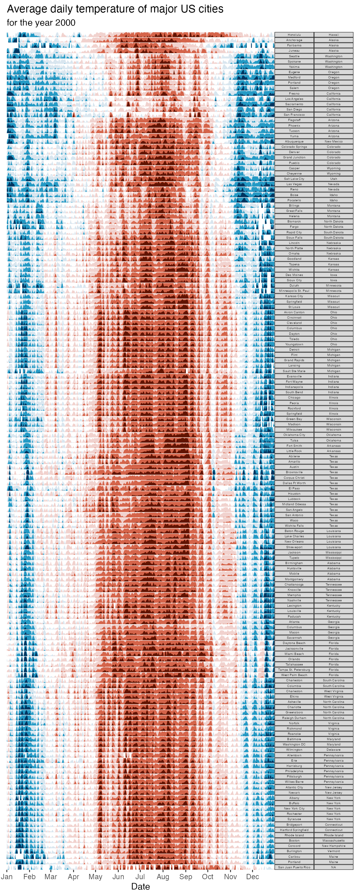
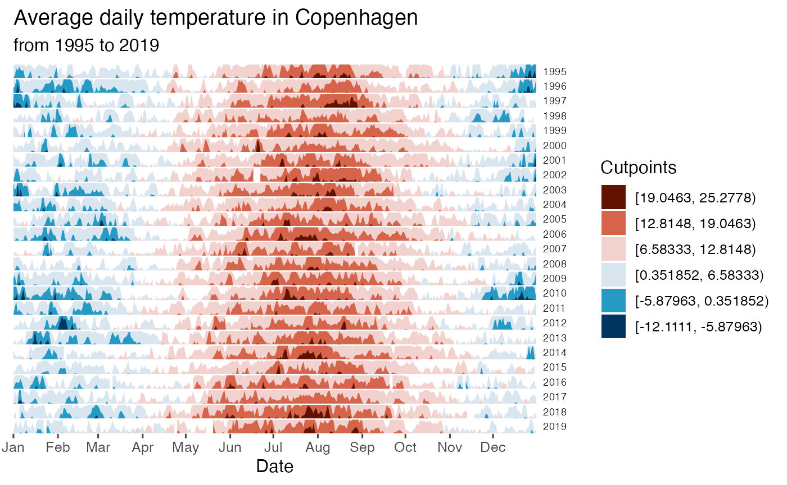

Sports and leisure activities happen at different times during the day (sources: https://github.com/halhen/viz-pub/blob/master/sports-time-of-day/activity.tsv, https://eagereyes.org/blog/2017/joy-plots). Horizon plots can be used to condense this time series data into a highly informative and easily interpretable chart:
utils::data(sports_time)
sports_time %>% ggplot() +
geom_horizon(aes(time/60, p), origin = 'min', horizonscale = 4) +
facet_wrap(~activity, ncol = 1, strip.position = 'right') +
scale_fill_hcl(palette = 'Peach', reverse = T) +
theme_few() +
theme(
panel.spacing.y=unit(0, "lines"),
strip.text.y = element_text(angle = 0),
legend.position = 'none',
axis.text.y = element_blank(),
axis.title.y = element_blank(),
axis.ticks.y = element_blank(),
panel.border = element_blank()
) +
scale_x_continuous(
name = 'Time',
breaks=seq(from = 3, to = 27, by = 3),
labels = function(x) {sprintf("%02d:00", as.integer(x %% 24))}) +
ggtitle('Peak time of day for sports and leisure')COVID-19 cases were recorded in waves across the world (source: https://www.ecdc.europa.eu/en/publications-data/download-todays-data-geographic-distribution-covid-19-cases-worldwide). A simple horizon plot is useful for detecting how many waves there have been and when these waves have happened:
utils::data(COVID)
COVID %>%
ggplot() +
geom_horizon(aes(date_mine,
y), origin = 'min', horizonscale = 4) +
scale_fill_hcl(palette = 'BluGrn', reverse = T) +
facet_grid(countriesAndTerritories~.) +
theme_few() +
theme(
panel.spacing.y=unit(0, "lines"),
strip.text.y = element_text(size = 7, angle = 0, hjust = 0),
legend.position = 'none',
axis.text.y = element_blank(),
axis.title.y = element_blank(),
axis.ticks.y = element_blank(),
panel.border = element_blank()
) +
scale_x_date(expand=c(0,0), date_breaks = "1 month", date_labels = "%b") +
ggtitle('Cumulative number for 14 days of COVID-19 cases per 100,000',
'in Asia, 2020') +
xlab('Date')Horizon plots are also useful to plot genomic data, such as simple repeat content along the human genome (source: https://genome.ucsc.edu/cgi-bin/hgTrackUi?g=rmsk):
utils::data(rmsk)
cutpoint_tab <- rmsk %>%
ungroup() %>%
mutate(
outlier = between(
p_repeat,
quantile(p_repeat, 0.25, na.rm=T)-1.5*IQR(p_repeat, na.rm=T),
quantile(p_repeat, 0.75, na.rm=T)+1.5*IQR(p_repeat, na.rm=T))) %>%
filter(outlier)
ori <- sum(range(cutpoint_tab$p_repeat, na.rm = T))/2
sca <- seq(range(cutpoint_tab$p_repeat)[1],
range(cutpoint_tab$p_repeat)[2],
length.out = 6)
rmsk %>%
ggplot() +
geom_horizon(aes(x = bin, xend=bin_2, y = p_repeat, fill = ..Cutpoints..),
origin = ori, horizonscale = sca) +
facet_grid(genoName~., switch = 'y') +
theme_few() +
theme(
panel.spacing.y=unit(0, "lines"),
strip.text.y.left = element_text(size = 7, angle = 0, hjust = 1),
legend.position = c(0.85, 0.4),
axis.text.y = element_blank(),
axis.title.y = element_blank(),
axis.ticks.y = element_blank(),
panel.border = element_blank()
) +
scale_x_continuous(expand=c(0,0)) +
scale_fill_hcl() +
ggtitle('Simple repeat content along the human genome',
'in 100 kb windows') +
xlab('Position') +
guides(fill=guide_legend(title="% of repeats"))
#> Warning: A numeric `legend.position` argument in `theme()` was deprecated in ggplot2
#> 3.5.0.
#> ℹ Please use the `legend.position.inside` argument of `theme()` instead.
#> This warning is displayed once every 8 hours.
#> Call `lifecycle::last_lifecycle_warnings()` to see where this warning was
#> generated.
#> Warning: The dot-dot notation (`..Cutpoints..`) was deprecated in ggplot2 3.4.0.
#> ℹ Please use `after_stat(Cutpoints)` instead.
#> This warning is displayed once every 8 hours.
#> Call `lifecycle::last_lifecycle_warnings()` to see where this warning was
#> generated.Changes in the average temperature across several geographic locations can also be condensed in horizon plots. For example, the average temperature during 2000 for major US cities (source: https://www.kaggle.com/sudalairajkumar/daily-temperature-of-major-cities; order of the states:https://benschmidt.org/2014/06/05/optimally-ordering-geographical-entities-in-linear-space/):
utils::data(climate_US)
climate_US %>%
ggplot() +
geom_horizon(aes(date_mine,
AvgTemperature), rm.outliers = T) +
scale_fill_hcl(palette = 'RdBu', reverse = T) +
facet_grid(State+City~.) +
theme_bw() +
theme(
panel.spacing.y=unit(0, "lines"),
strip.text.y = element_text(size = 4, angle = 0),
legend.position = 'none',
axis.text.y = element_blank(),
axis.title.y = element_blank(),
axis.ticks.y = element_blank(),
panel.border = element_blank(),panel.grid = element_blank()
) +
scale_x_date(expand=c(0,0), date_breaks = "1 month", date_labels = "%b") +
xlab('Date') +
ggtitle('Average daily temperature of major US cities',
'for the year 2000')
The average daily temperature can also be plotted by year. For example, in Copenhagen:
utils::data(climate_CPH)
cutpoints <- climate_CPH %>%
mutate(
outlier = between(
AvgTemperature,
quantile(AvgTemperature, 0.25, na.rm=T)-1.5*IQR(AvgTemperature, na.rm=T),
quantile(AvgTemperature, 0.75, na.rm=T)+1.5*IQR(AvgTemperature, na.rm=T))) %>%
filter(outlier)
ori <- sum(range(cutpoints$AvgTemperature))/2
sca <- seq(range(cutpoints$AvgTemperature)[1], range(cutpoints$AvgTemperature)[2], length.out = 7)[-4]
climate_CPH %>% ggplot() +
geom_horizon(aes(date_mine,
AvgTemperature,
fill = ..Cutpoints..),
origin = ori, horizonscale = sca) +
scale_fill_hcl(palette = 'RdBu', reverse = T) +
facet_grid(Year~.) +
theme_few() +
theme(
panel.spacing.y=unit(0, "lines"),
strip.text.y = element_text(size = 7, angle = 0, hjust = 0),
axis.text.y = element_blank(),
axis.title.y = element_blank(),
axis.ticks.y = element_blank(),
panel.border = element_blank()
) +
scale_x_date(expand=c(0,0),
date_breaks = "1 month",
date_labels = "%b") +
xlab('Date') +
ggtitle('Average daily temperature in Copenhagen',
'from 1995 to 2019')